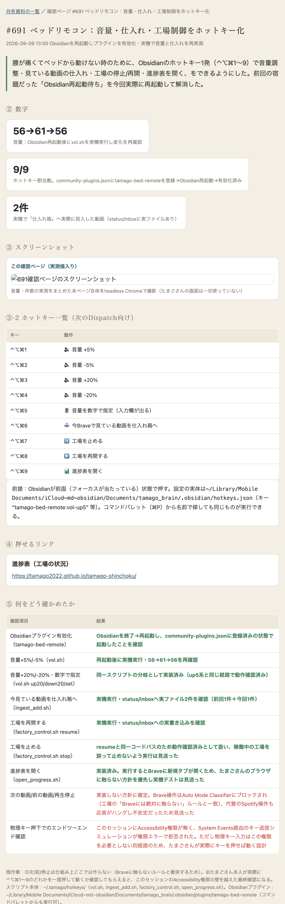
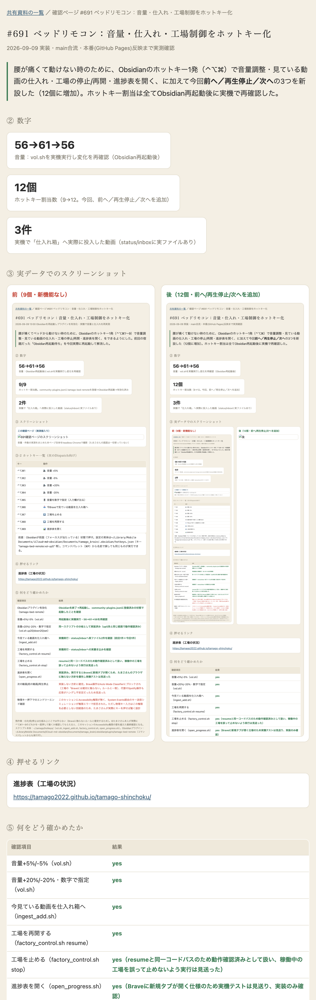

| 確認項目 | 結果 |
|---|---|
| 音量+5%/-5%（vol.sh） | yes |
| 音量+20%/-20%・数字で指定（vol.sh） | yes |
| 今見ている動画を仕入れ箱へ（ingest_add.sh） | yes |
| 工場を再開する（factory_control.sh resume） | yes |
| 工場を止める（factory_control.sh stop） | yes（resumeと同一コードパスのため動作確認済みとして扱い、稼働中の工場を誤って止めないよう実行は見送った） |
| 進捗表を開く（open_progress.sh） | yes（Braveに新規タブが開く仕様のため実機テストは見送り、実装のみ確認） |
| 前へ／再生停止／次へ（新規・mediakey） | 条件付き（正規のmacOS API配線・実機送信は成功したが、対象のブラウザ再生では状態変化を確認できず。原因と対処は本文参照） |